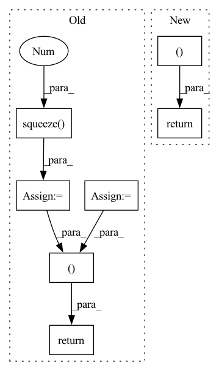

Pattern ID :7719
Before Change
m, x_rnn, _ = self.erb_stage(feat_erb)
spec = self.mask(spec, m, atten_lim) // [B, 1, T, F, 2]
lsnr, _ = self.lsnr_net(x_rnn)
out_specs = [spec.squeeze(1 ) .clone() for _ in range(len(self.refinement_stages) + 1)]
// re/im into channel axis
spec_f = (
spec.squeeze(1)[:, :, : self.df_bins].permute(0, 3, 1, 2).clone()
) // [B, 2, T, F_df]
h_conv: Optional[Tensor] = None
for i, (stage, _) in enumerate(zip(self.refinement_stages, self.refinement_snr_max)):
refinement, h_conv, _ = stage(self.cplx_comp(spec_f), h_conv)
spec_f = spec_f + refinement
out_specs[i + 1][..., : self.df_bins, :] = spec_f.permute(0, 2, 3, 1)
spec[..., : self.df_bins, :] = spec_f.unsqueeze(-1).transpose(1, -1)
return spec, m, lsnr, out_specs
def init_model(df_state: Optional[DF] = None, run_df: bool = True, train_mask: bool = True):
assert run_df and train_maskAfter Change
r, _, _ = self.refinement_stage(self.cplx_comp(spec_f))
spec_f = self.refinement_op(spec_f, r)
spec[..., : self.df_bins, :] = spec_f.unsqueeze(-1).transpose(1, -1)
return spec, m, lsnr, None
def init_model(df_state: Optional[DF] = None, run_df: bool = True, train_mask: bool = True):
assert run_df and train_maskIn pattern: SUPERPATTERN
Frequency: 5
Non-data size: 7
Instances Fragment ID: 25614068
Project Name: rikorose/deepfilternet
Commit Name: 946b362aa406f8a1808a252393351d0e7523130a
Time: 2022-04-12
Author: h.schroeter@pm.me
File Name: DeepFilterNet/df/multistagenet.py
M Class Name: MSNet
N Class Name: MSNet
M Method Name: forward(3)
N Method Name: forward(3)
M Parent Class: nn.Module
N Parent Class: nn.Module
M File Name: DeepFilterNet/df/multistagenet.py
N File Name: DeepFilterNet/df/multistagenet.py
M Start Line: 534
M End Line: 547
N Start Line: 504
N End Line: 510
Before Change
def __getitem__(self, index):
target = self.windows.metadata["target"]
keys = ["i_supercrop_in_trial", "i_start_in_trial", "i_stop_in_trial"]
supercrop_ind = self.windows.metadata.iloc[index][keys].to_list()
x = self.windows[index].get_data().squeeze(0 )
return x, target[index], supercrop_ind
def __len__(self):
return len(self.windows.events)
After Change
def __getitem__(self, index):
x = self.windows.get_data(item=index)[0]
md = self.windows.metadata.iloc[index]
return x, md["target"], md[self.md_keys].to_list()
def __len__(self):
return len(self.windows.events)
Fragment ID: 25614082
Project Name: braindecode/braindecode
Commit Name: 92f69431496e540ea0bdb3b0456eb49604d795d0
Time: 2020-02-25
Author: hubert.jbanville@gmail.com
File Name: braindecode/datasets/base.py
M Class Name: WindowsDataset
N Class Name: WindowsDataset
M Method Name: __getitem__(2)
N Method Name: __getitem__(2)
M Parent Class: BaseDataset
N Parent Class: BaseDataset
M File Name: braindecode/datasets/base.py
N File Name: braindecode/datasets/base.py
M Start Line: 65
M End Line: 69
N Start Line: 66
N End Line: 68
Before Change
def __getitem__(self, idx):
ID, duration, wavpath, phn_seq = self.items[idx]
wav, samplerate = torchaudio.load(wavpath)
wav = wav.squeeze(0 ) // flat tensor
if self.audio_transform is not None:
wav = self.audio_transform(wav)
phn_seq = phn_seq.split()
if self.text_transform is not None:
phn_seq = self.text_transform(phn_seq)
return (ID, wav, phn_seq )
class ExampleCategoricalEncoder:After Change
wav = self.audio_transform(wav)
if self.text_transform is not None:
phn = self.text_transform(phn)
return (ID, wav, phn )
// Audio transform Fragment ID: 25614066
Project Name: speechbrain/speechbrain
Commit Name: 132af0bbdaa7fca6c3c2edb8af2a09944397a0a9
Time: 2020-09-25
Author: aku.rouhe@aalto.fi
File Name: recipes/minimal_examples/neural_networks/ASR_CTC/placeholders.py
M Class Name: ASRMinimalExampleDataset
N Class Name: ASRMinimalExampleDataset
M Method Name: __getitem__(2)
N Method Name: __getitem__(2)
M Parent Class: torch.utils.data.Dataset
N Parent Class: torch.utils.data.Dataset
M File Name: recipes/minimal_examples/neural_networks/ASR_CTC/placeholders.py
N File Name: recipes/minimal_examples/neural_networks/ASR_CTC/placeholders.py
M Start Line: 136
M End Line: 144
N Start Line: 162
N End Line: 167
Before Change
// delay in the masking stage.
if not self.pad_specf:
spec = self.pad_spec(spec)
m = self.pad_out(m.unsqueeze(-1)).squeeze(-1 )
spec = self.mask(spec, m)
if self.run_df:
df_coefs, _ = self.df_dec(emb, c0)
df_coefs = self.pad_out(df_coefs)
if self.pad_specf:
// Only pad the lower part of the spectrum.
spec_f = self.pad_spec(spec)
spec_f = self.df_op(spec_f, df_coefs)
spec[..., : self.nb_df, :] = spec_f[..., : self.nb_df, :]
else:
spec = self.df_op(spec, df_coefs)
return spec, m, lsnr, df_coefs
After Change
else:
spec = self.df_op(spec, df_coefs)
return spec, m, lsnr, df_alpha
Fragment ID: 25614080
Project Name: rikorose/deepfilternet
Commit Name: 3e554333e5a3f0802f8df5a00e07de517dfe6561
Time: 2022-10-18
Author: h.schroeter@pm.me
File Name: DeepFilterNet/df/deepfilternet2.py
M Class Name: DfNet
N Class Name: DfNet
M Method Name: forward(4)
N Method Name: forward(4)
M Parent Class: nn.Module
N Parent Class: nn.Module
M File Name: DeepFilterNet/df/deepfilternet2.py
N File Name: DeepFilterNet/df/deepfilternet2.py
M Start Line: 428
M End Line: 455
N Start Line: 486
N End Line: 502
Before Change
def __getitem__(self, idx):
ID, duration, wavpath, phn_seq = self.items[idx]
wav, samplerate = torchaudio.load(wavpath)
wav = wav.squeeze(0 ) // flat tensor
if self.audio_transform is not None:
wav = self.audio_transform(wav)
phn_seq = phn_seq.split()
if self.text_transform is not None:
phn_seq = self.text_transform(phn_seq)
return (ID, wav, phn_seq )
class ExampleCategoricalEncoder:After Change
wav = self.audio_transform(wav)
if self.text_transform is not None:
phn = self.text_transform(phn)
return (ID, wav, phn )
// Audio transform Fragment ID: 25614073
Project Name: speechbrain/speechbrain
Commit Name: fafd93caa8cb16cd3d7bc3e2b0805f307539067b
Time: 2020-10-22
Author: aku.rouhe@aalto.fi
File Name: recipes/minimal_examples/neural_networks/ASR_CTC/placeholders.py
M Class Name: ASRMinimalExampleDataset
N Class Name: ASRMinimalExampleDataset
M Method Name: __getitem__(2)
N Method Name: __getitem__(2)
M Parent Class: torch.utils.data.Dataset
N Parent Class: torch.utils.data.Dataset
M File Name: recipes/minimal_examples/neural_networks/ASR_CTC/placeholders.py
N File Name: recipes/minimal_examples/neural_networks/ASR_CTC/placeholders.py
M Start Line: 136
M End Line: 144
N Start Line: 162
N End Line: 167